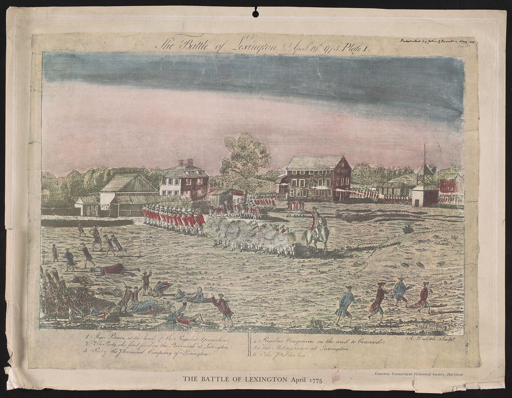
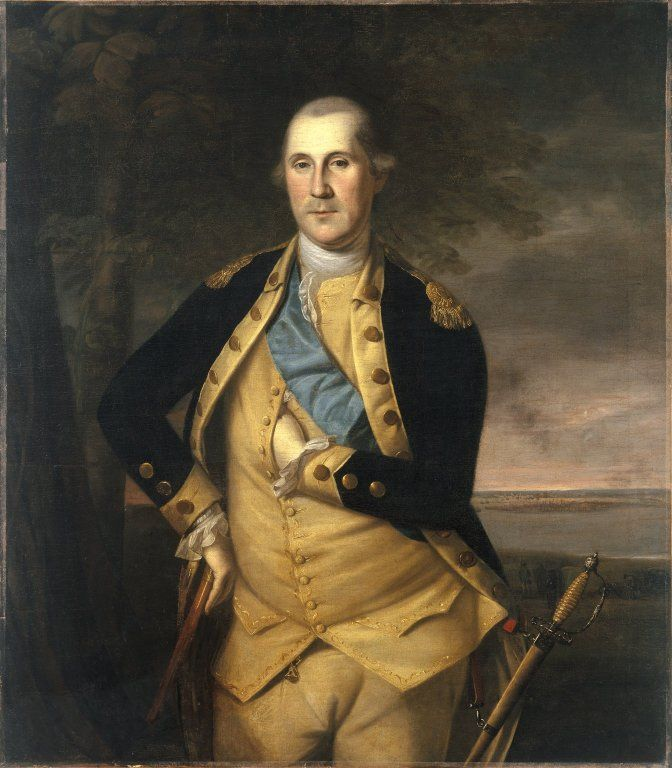
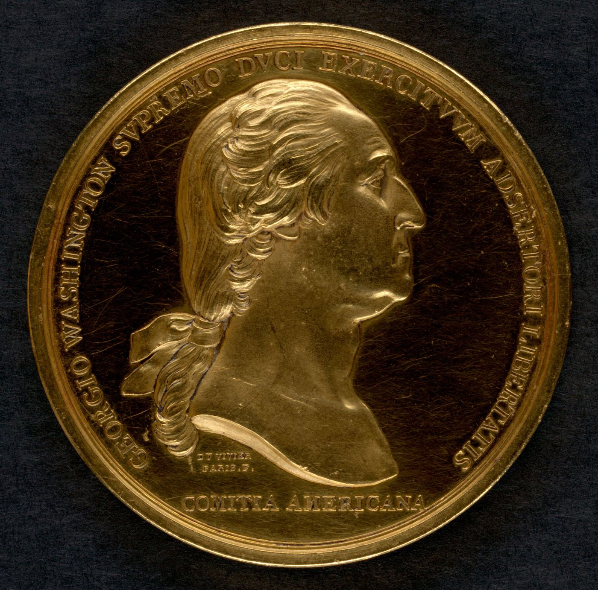

The Revolution
On April 19, 1775, Medford's minute men marched on the alarm. Isaac, John, Daniel, Ebenezer, Jonathan, James, Peter Jr., and several Samuels of the Tufts family served in Capt. Isaac Hall's company (MSS vol. XVI, pp. 132–139). Over the following eight years, men named Tufts from Medford, Woburn, Gloucester, Chelsea, Malden, Cambridge, Brookline, and other towns appear on the rolls.
“The 19th of April, as it chanced, was the silver wedding anniversary of Peter and Anne Tufts, who lived at Winter Hill. Paul Revere's alarm took Peter to the front, his son John, a lad of eighteen, being charged to stay behind and take care of things.”
Ellen Chase, The Beginnings of the American Revolution, vol. III (1910), p. 99 · page scan

Revolutionary Profiles
- Peter Tufts Jr. (Medford)
- Dr. Cotton Tufts (Medford; Weymouth)
- Zachariah Tufts (Woburn)
- William Tufts (several men) (Bedford; Medford; others not given)
- Samuel Tufts (several men) (Medford; Brookline; others not given)
- Barnabas Tufts (Medford; Gloucester (Cape Ann); Topsham, Me.)
- Caleb Tufts (Medford; later Mystic, Conn.)
- Dr. Simon Tufts (Medford)
- Lieut. William Tufts (Charlestown; Medford)
- Capt. Joseph Tufts Jr. (Medford)
- Samuel Tufts (1732–1818) (Medford)
- Nathan Tufts (1741–1784) (Medford)
- Rev. Francis Tufts (Medford; Lincoln Co., Me.; Farmington, Me.; Ohio)
- James Tufts Jr. (Medford)
- Ebenezer Tufts (Medford)
- Jonathan Tufts (Medford)
- Sgt. Isaac Tufts (Medford)
- William Tufts Jr. (1736–1782) (Medford)
- Lieut. Moses Tufts (Medford; Chelsea; Newcastle, Me.)
- George Tufts (Medford; Concord)
- Lieut. Grimes Tufts (Medford; Lynn)
- Samuel Tufts 2nd (1752–1815) (Medford)
- Lieut. Francis Tufts (1756–1823) (Lancaster; Boston)
- Cpl. David Tufts (Medford; Billerica; Lynn)
- Joseph Tufts (of Danvers) (Danvers)
- Andrew Tufts (Medford; Worcester)
- Samuel Tufts 3rd (1761–1803) (Medford)
- John Tufts (of Prospect Hill) (Prospect Hill (Somerville))
- Cpl. John Tufts (1754–1839) (Charlestown (Winter Hill))
- John Tufts (of Windham, Conn.) (Windham, Conn.; Ashford; Stephentown, N.Y.; Ludlow, Mass.)
- Henry Tufts (of Lee, N.H.) (Boston; Newmarket and Lee, N.H.)
- Thomas Tufts (of Lee, N.H.) (Lee, N.H.)
- Eliphalet Tufts (Lee, N.H.)
- Capt. Samuel Tufts (Loyalist) (Nova Scotia; Boston; near Quoddy Point, Me.)
- Simon Tufts (Loyalist, 1750–1801) (Medford; Boston; Cape Town)
- William Tuffs (1750–1848) (Schoharie, N.Y.; Ohio; Elkhart, Ind.)
- Nathan Tuffs (1752–1827) (Portsmouth, N.H.; Bethel, Vt.)
- Ephraim Tufts (Menotomy (Arlington), Mass. [unconfirmed])
- Aaron Tufts (Medford)
- Adam Tufts (Chelsea and Malden)
- Benjamin Tufts (Medford)
- Cato Tufts (Medford)
- Daniel Tufts (Medford)
- Hutchinson Tufts (Medford)
- Nathan Tufts Jr. (Medford)
- Samuel Tufts 3d (Medford)
- Dr. Simon Tufts (1700–1747) (Medford, Mass.)
- Turell Tufts (1770–1842) (Medford, Mass.)
- Timothy Tufts (1735–1805) (Charlestown (now Somerville), Mass.)
- Peter Tufts the Immigrant (c. 1617–1700) (Charlestown (Mystic Side) and Malden, Mass.)
The Tufts entries in Massachusetts Soldiers and Sailors, vol. XVI, fill pp. 131–140. Every page is linked here so that men not yet profiled can be read in the original: 131 · 132 · 133 · 134 · 135 · 136 · 137 · 138 · 139 · 140.


Kin by Marriage
Men who married into the Tufts family and served the Revolution. Short entries only.
- Samuel Teel, husband of Elizabeth Tufts (36-5): 2nd Lieutenant in the Revolution. (Tufts Kinsmen, Vol. I, p. 152; owner-supplied extract; page scan not on file)
- Isaac Greenleaf, husband of Mary Tufts Jr. (41-1): Private; served at Noddle’s Island and in New York, 1776. (Tufts Kinsmen, Vol. I, p. 159; owner-supplied extract; page scan not on file)
- Thomas Pritchard, husband of Lucy Tufts (41-3): Sergeant at the Lexington Alarm; recruiting officer after the British left Boston, commissioned Captain; commanded a company in the 1776 New York campaign, where his maneuvers won Washington’s approval. (Tufts Kinsmen, Vol. I, p. 160; owner-supplied extract; page scan not on file)
- Ebenezer Thompson, husband of Hannah Tufts (44-1): Private, guarding the Convention Troops. (Tufts Kinsmen, Vol. I, p. 165; owner-supplied extract; page scan not on file)
- Jonathan Foster Jr., husband of Susanna Tufts (52-3): Paid a man to go to Canada in 1776. (Tufts Kinsmen, Vol. I, p. 176; owner-supplied extract; page scan not on file)
- Seth Stone, husband of Mary Tufts (52-4): Lieutenant; later of Marlborough, N.H. (1791–94) and Pittsford, Vt. (Tufts Kinsmen, Vol. I, p. 177; owner-supplied extract; page scan not on file)
- Joseph Adams, husband of Anna Tufts (53-11): Sergeant in Capt. Oliver Titcomb’s Co., Col. Jacob Gerrish’s Regt., guarding Burgoyne’s surrendered army; hauled with his oxen for the Dorchester Heights fortifications; buried a silver tankard during the war that is now used in the communion service of the Arlington church. (Tufts Kinsmen, Vol. I, p. 181; owner-supplied extract; page scan not on file)
- Joshua Simonds, husband of Pamela Tufts (31-4): Officer in the Revolution (the book cites DUDL 841). (Tufts Kinsmen, Vol. I, p. 145; owner-supplied extract; page scan not on file)
- John Albre, husband of Lydia Tufts (31-6): Officer in the Revolution (DUDL 841); lived in Salem, Acworth, N.H., and Daniels Street, Salem. (Tufts Kinsmen, Vol. I, p. 145; owner-supplied extract; page scan not on file)
- Thomas Brooks Jr., husband of Mercy Tufts Jr. (11-6): Captain in the Revolution and Representative to the General Court. (Tufts Kinsmen, Vol. I, p. 112; owner-supplied extract; page scan not on file)
Also in Vol. I but not profiled: Aaron Tufts (40-4), baptized 1740, marched from Lancaster to Springfield in 1757 for the relief of Fort William Henry in the French War and never returned (p. 158). Joshua Bradstreet Tufts (28-12, 1760–1835), brother of the Loyalist Capt. Samuel Tufts, was raised in Nova Scotia, and no Revolutionary service is recorded for him. After the war he invested with Alexander Hamilton in the Manhattan Water Co. (p. 142).
⚑ Unverified
The Tufts Kinsmen Vol. I statements on this page come from an extract supplied by the owner and have not yet been checked against a page scan (citation rule: page scan not on file).
The Medford Minute Men Roster
“ROSTER OF THE FIRST COMPANY OF MINUTE MEN WHO ASSEMBLED IN MEDFORD AT THE CALL OF PAUL REVERE AND ENGAGED IN THE BATTLE OF APRIL 19, 1775”
The monument, erected by the City of Medford in 1925, lists Tufts Daniel, Tufts Ebenezer, Tufts James Jr., Tufts John Corporal, Tufts Jonathan, Tufts Isaac Sergeant, Tufts Peter Jr., Tufts Samuel, and Tufts Samuel 3d. View photograph

Related: Maps by Peter Tufts, the surveyor · Winter Hill · Medford & Charlestown
Illustrations




_-_general_view.jpg){kind=link}


.jpg){kind=link}


.jpg){kind=link}





.jpg){kind=link}
Further Research Links
Outside resources for further research. Secondary and user-contributed sites (blogs, family trees, memorial sites, Wikipedia) are not verified here.
- Address by Hon. Richard B. Coolidge, Mayor of Medford, April 19, 1925 (perseus.tufts.edu)
Dr. Tufts and John Brooks
John Brooks (1752–1825), major of minutemen in 1775 and later governor of Massachusetts, was the apprentice of Dr. Simon Tufts the younger (1727–1786). Brooks’s History of Medford says the doctor:
“was so interested in the virtuous character and thirst for knowledge of young John Brooks that he almost adopted him as a son. He took his pupil under a written indenture, as an apprentice for seven years, to learn the science and practice of medicine”
Charles Brooks, History of the Town of Medford (1855), p. 306. Text (Perseus)
Brooks adds that the doctor put him to a classical school, took him into his family, and later invited him back to Medford and “resigned to him his practice.” In 1776 William Tudor wrote to John Adams that Major Brooks “studied Physick with Doctor Tufts of Medford” (Papers of John Adams, vol. 5, pp. 7–9. MHS).
“He was a Medford boy, and only two years before had left the home of Dr. Simon Tufts, where he was educated, to practice medicine in Reading. Probably some of the men had been drilled by him in school-boy days in the vacant lot back of the doctor’s house.”
Medford Historical Register, vol. III, p. 31, on the Medford minute company of April 19, 1775. Perseus
The fullest account is Dr. John Dixwell’s memoir of Brooks, which Charles Brooks quotes in his History of Medford. It describes the apprentice years in the younger doctor’s household, which began when John Brooks was fourteen (about 1766, nearly twenty years after the elder Dr. Simon’s death in 1747):
“In the hours of relaxation from study, he amused himself with the drill and exercise of the soldier. His manners were so gentle and attractive that he was the delight of all the village boys; they collected about him as the chief source of their pleasures and amusements; he formed them into a company, and trained and exercised them in all the duties of military discipline. Dr. Tuft’s yard was often converted into a train-field, and displayed in miniature all ‘the pomp and circumstance of glorious war.’”
Dr. John Dixwell, quoted in Charles Brooks, History of the Town of Medford (1855), p. 128 (the 1886 Usher edition reprints it, pp. 132–133). Internet Archive text
Note: this is the source for the family story of training at Dr. Tufts’s. As printed, it describes a boys’ company drilled by the young apprentice in the doctor’s yard, not the Medford minutemen, and it says “yard,” not farmhouse or farm. The Register’s “probably” above is a later guess that some of those boys became the men of 1775.
⚑ Unverified
That the Medford minute company of 1775 itself trained at Dr. Tufts’s house or farm. No source found says so. Brooks’s History (1855, p. 128) describes only the boys’ drills in the doctor’s yard during Brooks’s apprenticeship (about 1766–1773).